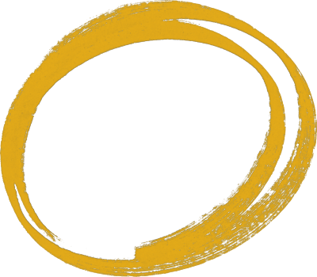
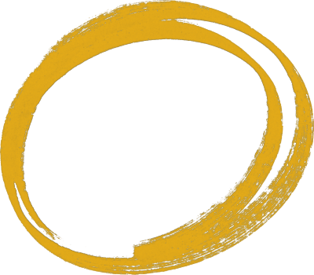

Design
Junior Designer
Key differences in this role
- Solve specific function-level problems (e.g., "add to shopping cart").
- Gets more hands-on support.
- Delivers end-to-end solutions to solve known problems.
- Learning best practices for common UX problems. Emerging knowledge of common patterns. Solutions are solid, though not original.
- Delivers end-to-end solutions to solve known problems.
- Primarily focused on execution.
- Contributes to their product team and Design Team.
Strategy: how you understand and plan solutions which solve customer problems to drive business outcomes
- Has a good understanding of Findmypast's Products. Knows our competitors, their solutions and gaps.
- Know Findmypast's target customers and personas. Know who’s using your product, their jobs, tasks, use cases, and goals.
- You understand the strategy and vision for Findmypast and your team.
- Understand the metrics and outcomes for your product area.
Execution: How we ship solutions to our customers
- Starts work by understanding customer and business problems. Explores different ways to solve problems. Is able to identify pros/cons and implications of different approaches.
- Has an awareness of the fundamentals of system design. Structures information clearly.
- Uses existing research to inform your work. Participates as a note taker.
- Works closely with engineers to understand and work around constraints. Does QA by testing what's built and fixing bugs with your team.
Behaviours: how we do the work and what we model for others.
- Familiar with our team principles - apply them in your work. Understand and apply Findmypast's company values.
- Looks for opportunities to learn and develop. Builds self-awareness (what are your strengths, weaknesses and blind spots as a practitioner and team mate?). Works with manager to set learning and development objectives.
- Develops good relationships within your delivery team and the design team. Demonstrates a willingness to help others/volunteer.
- Seeks feedback from team members and considers it with an open mind. Communicates status / trajectory of work clearly and frequently to manager, peers and cross functional colleagues.
- Manages tasks assigned to them and prioritises their work with PO, Design Lead or HoD
- Owns their own work. Advocates for the customer and represents design in their cross functional team.
Designer
Key differences in this role
- Given specific product capabilities that need to be solved (e.g., Checkout process).
- Growing independence.
- Meets target in 2, developing 2 other.
- Confident in applying best practices to common UX problems. Good, applied knowledge of common patterns. Solutions are solid, not original.
- Delivers impactful solutions that solve customer problems and move business metrics.
- Actively contributes to road map and strategy planning.
- Co-leading their team with their PM and Engineering Lead. Models behaviours. Growing influence in Design Team.
Strategy: how you understand and plan solutions which solve customer problems to drive business outcomes
- Consistently leverages knowledge of your product area and our competition to make decisions.
- Hungry for new and deeper insights about customers to understand their needs, make decisions, and increase confidence. Leverage knowledge from Customer Support to better understand and serve customers.
- Actively contribute to your team’s strategy and road maps. You're able to connect the work you are doing to company and team strategy through clear, measurable objectives.
- Consistently focus on driving outcomes, not just outputs. Influence how your team defines success metrics.
Execution: How we ship solutions to our customers
- Understands the underlying motivations of our customers. Challenges and influences team thinking around a problem. Explores a broad range of solutions with cross-functional partners. Converges on a solution using strong rationale.
- Applies the fundamentals of system design in their work - goes beyond interfaces. Integrates their system with the broader product and other systems.
- Pairs with PO/PM and researcher to do researcher. Develops and applies interview skills.
- Judges work by what reaches the customer, not what was in the design file. Works closely with Po/PM and engineers to scope projects and release plans. Makes smart tradeoffs which balance speed and quality. Iterates post-release.
Behaviours: how we do the work and what we model for others.
- Use our team values and principles to inform your work and make decisions. Live and model our company values in your day-to-day work and interactions with colleagues.
- Consistently seeks opportunities to improve as a contributor and team mate. Build resilience. Sets their own learning and development goals.
- Gives and receives feedback honestly and openly within design and product teams. Improves communication and health of delivery team. Part of recruiting and interviewing process.
- Communicates opinions and complex ideas clearly and is open to having their mind changed by colleagues. Respectfully challenges.
- Works autonomously but knows when to ask for help. Doesn't wait to be told what to do, proactively identifies and scopes work with PO. Is able to make smart trade offs in prioritising work. Focuses on goals.
- Begins to shape and influence backlog in their team. Is generous with their time and volunteers feedback. Begins to manage upwards in the organisation.
Senior Designer
Key differences in this role
- Leads the solution of a product area; connects that to broader product vision (e.g, landing page and purchase experience).
- Mostly autonomous.
- Meets target in 3, developing in 2 others.
- Begins going beyond best practices, and starts uncovering novel, unexpected, but still workable solutions.
- When necessary, leads execution across multiple teams.
- Growing influence on strategy and vision for their product area.
- Co-leading their team with their PM and Engineering Lead. Models behaviours. Growing influence in Design Team.
Strategy: how you understand and plan solutions which solve customer problems to drive business outcomes
- Show deep understanding of your team’s products and competitors in your solution design.
- Hungry for new and deeper insights about customers to understand their needs, make decisions, and increase confidence. Leverage knowledge from Customer Support to better understand and serve customers.
- Grow your influence on the future vision for your product area. Actively plan for how your designs will help us surpass our competitors.
- Consistently take ownership of your team reaching our business outcomes.
Execution: How we ship solutions to our customers
- Is able to diverge/converge quickly, with impact. Drives the conversation around a problem - grounding thinking on the WHY.
- Can solve complex system design challenges.
- Leads quantitative and qualitative research.
- Improve the way your team ships product. Drive conversations around measuring impact and subsequent iterations.
Behaviours: how we do the work and what we model for others.
- Role models our team principles and values within your team. Identifies opportunities to contribute to refining our team principles and values.
- Consistently seek out opportunities to improve your cross functional team and the design team. Motivate colleagues by sharing insightful and relevant feedback.
- Drives health of teams they are part of and helps them to become more inclusive. Begins to write or speak publicly in order to share expertise and build our employer brand.
- Begins to anticipate feedback and address it proactively. Uses storytelling to communicate ideas and your work. Begins to work with frameworks like Radical Candor for giving difficult feedback.
- Is able to balance workload with more than one team. Understands the difference between taking action and making progress. Helps resolve dependencies and raises problems before they impact work. Identifies opportunities to go beyond scope of work and role.
- Holds themselves accountable for the work which is delivered to the customer. Looks for ways to provide more value in teams. Uses facilitation skills to work beyond design - bringing together cross functional peers around customer or business problems.
Lead Designer
Key differences in this role
- Leading the solution of undefined problem spaces (e.g. “How can we reconsider how people look for and purchase items?").
- Autonomous force multiplier for their team and contributors around them.
- Meets target in 3, developing in 2 others.
- Develops problem-framing approaches, establishing new starting points that lead to new kinds of solutions, which affects strategic thinking, not just execution.
- Autonomously identifies new problems & opportunities, and delivers impactful solutions. Improves the Design Team.
- Actively contributes to group strategy.
- Actively gives feedback and mentors designers. Drives high standards of quality across the group and Design Team.
Strategy: how you understand and plan solutions which solve customer problems to drive business outcomes
- Deeply understand your group’s products and competition. Identify new problems and opportunities in your group.
- Identify gaps and opportunities in customer understanding for your team.
- Drive the vision for your product, guiding your team towards a better future state. Actively contribute to group product strategy.
- Steer the group’s execution toward reaching business goals. Actively contribute to shaping commercial goals and outcomes for the group.
Execution: How we ship solutions to our customers
- Drives best practice, coaches other contributors.
- Designs connected rationalised systems and helps others apply them in their work. Can identify and solve complex system design debt.
- Identifies and fills research gaps - contributing to strategy. Uses research to identify strategic and tactical opportunities.
- Improve the way your team ships product. Drive conversations around measuring impact and subsequent iterations.
Behaviours: how we do the work and what we model for others.
- Role models our team principles and values within your team. Identifies opportunities to contribute to refining our team principles and values.
- Role model for other team members - models behaviours. Encourages and contributes to the growth of other team members.
- Mentors other contributors to help growth. Identifies opportunities to improve health and inclusivity of the design team - actions these.
- Builds clear narratives to get buy-in from senior stakeholders and inspire other team members. Communicates clearly with every part and level of the org. Masters conflict resolution and feedback frameworks.
- Co-ordinate design work across multiple teams. Unblocks teams and designers - helping them get what matters most done, fast. Prioritises the most impactful / important initiatives to put their time into.
- Drives excellence within the design team and owns standards of quality. Takes ownership of problems and challenges within their role and outside of it. Focuses themselves, and others on how Findmypast becomes successful, not just your team / group.
Engineering
Junior Software Engineer
You work effectively as a team member, positively collaborating in pairing and other team activities
- Other team members confirm you are active and engaged during pairing sessions: contributing ideas, asking questions etc.
- You have formed reasonable working relationships with your fellow team members.
- You are an active participant at team process meeetings for example, stand-up, planning, retro and stakeholder review.
You know the tools/technologies and working practices used by your team, and why these have been chosen
- You understand the process for bug prioritisation in the team.
- You are developing judgement on when it is appropriate to work solo or in a pair and rely on your senior team members for guidance.
- You understand the benefits of the different types of code quality checks your team uses and are learning how to apply your team's code standards.
You can lead on simpler tasks
- You can drive the completion of a ticket and communicate the implementation of the task to the wider team.
- You can complete a simpler task without asking for help.
You may be starting to take on small items of ownership within your team, with guidance from others
- You are working directly with your Product Owner to regularly manage/groom your teams bug backlog.
- You are monitoring performance dahsboards for a specific service, escalating concerns to the team where necessary.
You're pro-active in finding ways to contribute value within your team wherever possible
- When finished with one task you actively look for your next task, communicating clearly with the team on what you intend to do next.
- You make useful contrbutions to team retrospectives with ideas for improvements.
- During technical design discussions you are engaged and listening. Even if you have difficulty contributing ideas you are asking questions to ensure you understand things correctly.
- During planning sessions you are contributing to story sizing, asking questions to be sure you are understanding the work correctly.
You understand the basic principles of software development and demonstrate these in your work
- You are developing an understanding of the ways of working that support Lean delivery and are watchful for waste and inefficiency.
Software Engineer
You can confidently tackle many of the problems faced by your team without support, although you may still need support with more complex, challenging items or in certain technologies that you don't know so well.
- You can take the lead and provide solid technical solutions to a task.
- You work with less experienced members of your team to deliver tasks effectively and to a high standard.
You are strong enough in some areas to be providing valuable support to others in your team.
- You are able to onboard new starts to your team in several technical areas, explaining technical choices, problem areas and suggest learning materials to assist ramp up.
- You are the point person for a particular technology or process in your team.
- You can confidently speak about team activities and goals at a stakeholder review.
- You help guide other team members through work in certain technologies/languages/services, where they are less experienced or confident than you.
You will take ownership of certain tools/systems/processes within your team.
- You can represent your team confidently in cross-team discussions (e.g. 1921 scaling sessions, inter-team alignment meetings, swarms etc.). In some instances you may take responsibility for setting up and running these sessions.
- You facilitate team cermonials, e.g. retros, planning, stand-ups, including management of actions.
You consider the long-term view when delivering a task, through consistent application of engineering good practice.
- When beginning a new task you lead conversation on testing approach, requirements for logging, monitoring, alerting, documentation, to ensure code is robust, resilient and can be understood by others.
- You show evidence that you are considering long-term scalability of a feature or application that you're designing, but avoid unnecessaary gold-plating.
You actively identify ways your team might improve, and help implement those ideas.
- You suggest improvements to process at retrospectives and post mortems.
- You use the 20% "true north" time to identify technical debt and drive the team to tackle the debt.
- You are monitoring performance dashboards, raising concerns, or areas for potential optimization with your team.
You're consistently making valuable contributions to all aspects of team discussion.
- You suggest improvements to process at retrospectives and post mortems.
- You provide input during planning and ticket estimation, e.g. clarifying areas of potential complexity, asking relevant questions, answering others questions etc.
Senior Software Engineer
You can lead confidently in tackling some of the most complex or challenging technical problems faced by your team, from design and planning to implementation.
- Impementing a new service that enforces quality standards.
- Taking a leading role in forming an architectural proposal to find an effective way of solving a complex technical problem.
- Taking a leading role in supporting the breakdown of a feature, epic or project sensibly into a well-defined backlog of small tasks or user stories.
- Leading white-boarding sessions to propose or refine technical designs.
- Taking a leading role in planning for delivery milestones, delivering often so as to avoid big-bangs.
You are an evangelist for consistent high-quality and efficient delivery within your team.
- You champion the use of instrumentation, monitoring and alerting within the team.
- You promote a consistent approach to testing within your team.
- You provide reasoned opinion to help shape your teams approach to code quality, coding standards etc.
You look beyond short-term deliverables, helping the team manage their long-term responsibilities.
- In pairing sessions you mentor your engineering partner to think wider than the scope of the ticket. ("Have you considered..." or "what about..." type of questions).
- When building an MVP or experiment you ensure visibility of the work required to fully productionise the feature and work with the PO to build it into the teams backlog.
- You support the refinement of the teams technical roadmap/backlog, adding items to the backlog, leading discussion of priorities etc.
You're likely to have ownership of various tools/systems/processes within your team.
- You take a lead role in ensuring on-going load or chaos testing of critical services owned by your team. You take ownership of maintaining and monitoring your teams performance dashboards, and feeding back potential improvements/concerns to the team.
- You lead regular sessions with your team to discuss coding standards, with a view to maintaining quality and consistency in your teams code.
You help others to deliver more value by sharing your expertise in certain technologies/processes.
- You mentor less experienced, or more junior members of your team in technologies you're strong in.
- You share knowledge in specific areas through team demos, brown bags, leading mob programming sessions etc.
You are a trusted influencer within your team and regularly use this position to positively impact the team.
- You help drive effective retropectives by raising issues and proposing meaningful actions.
- You put forward a persuasive case for the use of a specific technology to solve a problem effectively.
You're supporting the growth and development of your team, and individuals inside, or outside your team.
- You actively participate in the recruitment process, assisting and possibly leading interviews to find new team members with the required skills/experience/potential.
- You support the onboarding of new team members, buddying them through their initial set-up, introducing them to the domain and tech-stack and guiding them through their first tasks.
Principal Software Engineer
You can lead a team confidently through all phases of any project/initiative they are assigned to.
- You can take a difficult technical challenge and efficiently lead a team through the design phase, drive decision making, support the creation of a backlog and lead the team confidently into the implementation phase.
- You can confidently lead on the creation of architectural proposals and refine these designs based on feedback.
- You are able to support Product and management with the production of project-level estimates/timelines.
- You can solve technical prolems and lead the successful implementation of tasks others on your team may struggle with.
You'll be a go-to person, across the wider engineering team and beyond, for certain technologies/processes and helping solve the most challenging problems.
- You provide support to help a team solve a specific challenge which they're struggling with, in a domain or technology in which you have particular knowledge.
- You provide insightful feedback to architectural proposals, helping teams shape their ideas/designs.
You can identify even more complex problems, at a team or organisational level, propose solutions and take a lead role in ensuring appropriate action is taken.
- You are aware of a problem in a service not owned by you or your team, but you do have a potential solution in mind. You work with the owning team to implement that solution.
You are ensuring all tools/systems/ processes important to the work of your team are being actively owned within the team.
- You take action to monitor the state of all services your team owns, e.g. reviewing the state of documentation, dashboards, alerts, service performance etc. This may involve you delegating responsibility for services to others within the team, but you are actively ensuring the teams responsibilities are being managed.
- You are working with Product, Design and other stakeholders to ensure they are getting the engineering support they need, e.g. grooming backlog, ticket refinement, estimations etc.
You help ensure your team is focused on delivering against stakeholder expectations and can communicate confidently with stakeholders when needed.
- You support the PO in defining epic or project-level estimations, tracking progress against those estimates over time and communicating with stakeholders on progress over time.
You'll play an important role in defining long-term technical strategy at team level, and sometimes in a wider context.
- You are actively managing your teams technical roadmap, ensuring it's up-to-date and shared with Product and other stakeholders to ensure critical technical work is built into the overall team roadmap alongside Product work.
- You work to ensure your area of the platform is well-maintained and future-proofed. This may involve leading discussions/workshops with your team (and other experts) to refine technical plans.
You'll be supporting the development of others, at any level, within or outside your team.
- You are mentoring one or more engineers in technologies you are strong in.
- You are regularly working with less experienced engineers on complex tasks, helping them learn through practical experience.
- You share your learnings, using suitable means to do so: e.g. team-wide learning demos, discourse post, tech blog post etc.
Your learning will include a focus on advanced specialism and latest developments in particular technologies.
- Learnings will focus on areas not currently used by your team but which offer potential strategic value in terms of delivering on the long-term roadmap of the team.
- You have developed working knowledge in an area outside of the core platform/tech-stack in order to deliver an effective solution to an important business problem, e.g. ML/AI techniques, AWS/cloud technologies etc.
- Your skill-level in a valued specialism makes you a go-to person to support complex work in that area, e.g. CSS/HTML, Database Administration, Kubernetes, and you work to maintain your expertise in that area.